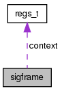

TacOS
0.1
Page principale
Structures de données
Fichiers
Structures de données
Champs de donnée
Tout
Structures de données
Fichiers
Fonctions
Variables
Définitions de type
Énumérations
Macros
Champs de données
Référence de la structure sigframe
Graphe de collaboration de sigframe:

[
légende
]
Champs de données
vaddr_t
ret_addr
int
sig
regs_t
context
uint32_t
state
sigset_t
mask
char
retcode
[8]
La documentation de cette structure a été générée à partir du fichier suivant :
kernel/
ksignal.c
Généré le Dimanche Juin 8 2014 09:54:16 pour TacOS par
1.8.1.2
 1.8.1.2
1.8.1.2